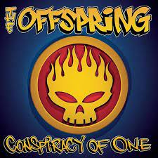

Smash
Smash es el tercer álbum de estudio de la banda estadounidense de punk rock The Offspring. Después de la gira para promocionar su álbum anterior, Ignition (1992), The Offspring comenzó a grabar Smash en octubre de 1993 en Track Record, North Hollywood, California. La grabación y producción se terminaron dos meses más tarde, y el álbum fue lanzado el 8 de abril de 1994, a través de Epitaph Records. Smash incorpora elementos del punk rock, rock alternativo, heavy metal y el ska, además de estar fuertemente influenciado por él, en aquel entonces, emergente pop punk. En los Estados Unidos, Smash ha vendido más de seis millones de copias hasta el 2013, y ha sido certificado con 6 platinos por la Recording Industry Association of America. También alcanzó el número cuatro en la lista estadounidense de Billboard 200, vendiendo entre 16 y 20 millones de copias en todo el mundo, y convirtiéndose en el álbum publicado en un sello discográfico independiente más vendido de todos los tiempos. Fue el primer álbum lanzado por Epitaph Records que obtuvo el oro y el platino en las ventas. Smash fue el disco que popularizó a The Offspring en todo el mundo, produciendo una serie de exitosos singles de gran éxito como "Come Out and Play", "Self Esteem" y "Gotta Get Away". Como un favorito de los fanes, Smash recibió críticas generalmente positivas de los críticos y llamó la atención de los principales sellos discográficos, entre ellos Columbia Records, con el que The Offspring firmaría en 1996. El álbum ha sido reconocido como un fundamental elemento influyente de la escena del punk rock y del punk pop de la década de 1990.
Conspiracy of One
Es el sexto álbum de estudio de la banda estadounidense de punk rock The Offspring, lanzado el 14 de noviembre de 2000 a través de Columbia Records. Después de una gira mundial para promocionar su álbum anterior, Americana, que fue lanzado en 1998, The Offspring comenzó a trabajar en un nuevo álbum. Conspiracy of One fue originalmente planeado para ser lanzado a la venta por menor directamente desde el sitio web de la banda, hasta que su compañía discográfica amenazó con demandarlos y el álbum finalmente se publicó como una edición física. Conspiracy of One debutó en el número nueve en la lista estadounidense de Billboard 200, con alrededor de 125.000 copias vendidas en su primera semana,y dio lugar a los sencillos "Original Prankster", "Want You Bad" y "Million Miles Away". El grupo realizó una gira mundial para promocionar el álbum. Conspiracy of One sería el último álbum de estudio de The Offspring con el baterista Ron Welty, ya que él dejaría la banda a principios del 2003 para dedicarse a su carrera en Steady Ground. Aunque el álbum no fue tan exitoso como Americana, Conspiracy of One obtuvo el platino en la RIAA en los Estados Unidos,y ha vendido alrededor de 6 millones de copias alrededor del mundo.
Ixnay on the Hombre

Ixnay on the Hombre es el cuarto álbum de estudio de la banda estadounidense de punk rock The Offspring. Bajo la producción de Dave Jerden, el álbum fue lanzado el 4 de febrero de 1997 a través de Columbia Records,aunque fue Epitaph Records, su anterior compañía discográfica quién lo lanzó en Europa. Tras el enorme éxito comercial de su anterior álbum Smash, The Offspring entró al estudio a mediados de 1996 para grabar un nuevo álbum. Preguntado por el título, el vocalista Dexter Holland afirmó que Ixnay On The Hombre quiere decir "Fuck Authority" o "Fuck the Man". ("Ixnay" es la versión Pig Latin de la palabra "nix", habitualmente usada en las películas de Hollywood de 1940). Ixnay On The Hombre tuvo un éxito moderado, debutando en el puesto número 9 en la lista de Billboard 200, y fue bien recibido por los críticos y los fanes. El álbum fue certificado disco de platino en los Estados Unidos. Vendiendo 7 millones de copias, El álbum contiene los sencillos "All I Want", "Gone Away", "The Meaning of Life" y "I Choose", mientras que "Cool to Hate" fue lanzado solamente en la radio para airplay. Los primeros dos singles también aparecen como la quinta y sexta canción respectivamente en su álbum recopilatoro Greatest Hits, que fue lanzado en 2005.
Americana

Americana es el quinto álbum de estudio de la banda de punk The Offspring, lanzado el 17 de noviembre de 1998 por Columbia. Vendió 20 millones de copias, de las cuales 10 millones certificadas, convirtiéndose en uno de los álbumes de mayor éxito de la banda, gracias, en parte, al éxito de sencillos como "Pretty Fly (for a White Guy)" y "Why Don't You Get A Job?". Americana obtuvo ocho discos de platino por parte de la CRIA, y cinco más en Estados Unidos (RIAA) y Australia (ARIA). Debutó en el puesto número dos del Billboard 200 y permaneció durante un período de 69 semanas en las listas de Estados Unidos y 35 en las de Canadá.[cita requerida] El álbum figura en el puesto número veinte en una lista de los 50 mejores álbumes de punk de todos los tiempos, elaborada por la revista británica Kerrang!.